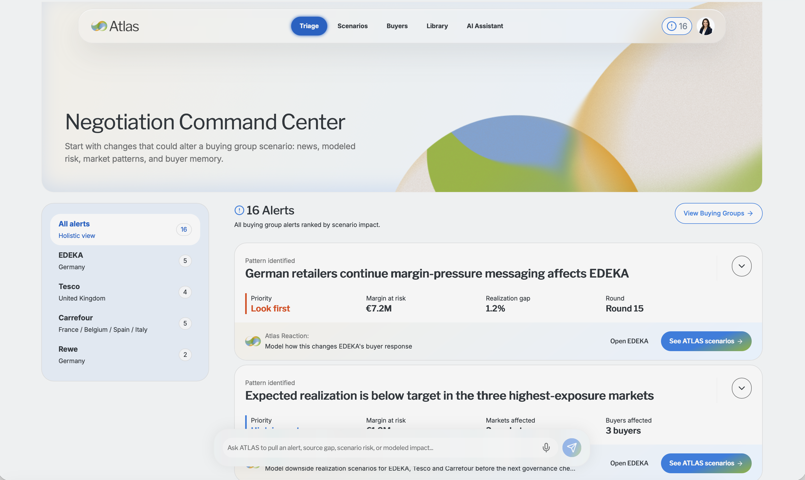

ATLAS · PepsiCo commercial strategy
I turned an open-ended AI prompt into a product thesis in three weeks.
I led UX strategy and built the working prototype of an AI decision tool for commercial negotiators. The thesis we landed on: decision support, not content generation.

In 30 seconds
Pricing, margin, market and buyer data was fragmented, and the brief was wide open.
Build around the decisions negotiators make, not around what AI can generate.
A few defensible capabilities instead of impressive breadth.
A working POC, a sharper product thesis and a prioritized roadmap in three weeks.
The situation
A fast AI sprint could easily produce novelty instead of utility.
Negotiation work moved across Excel, PowerPoint, SharePoint, Outlook, customer systems, commodity data, meetings and memory. The opportunity was broad, but the product needed a point of view about which decisions it should improve.
In a high-stakes commercial setting, a confident answer without provenance creates more risk than value.
The reframe
Users had data. They needed confidence.
The real question wasn’t “what does the data say?” It was “what do we do now, and can we defend it under pressure?” I ran weekly sessions across the sprint (discovery, co-design, concept trust and final validation) so that question stayed at the center while we moved fast.
Strategic decisions
Direct attention before adding information
ChoseA triage-first command center that surfaces priority signals and the next action.
Said no toA report-first dashboard, or yet another data layer.
Make trust visible in the product
ChoseSource, freshness, confidence and known gaps on every number and recommendation, plus editable assumptions.
Said no toExplaining trust in copy instead of designing it into behavior.
Close the decision loop
ChoseConnect risk diagnosis, scenario comparison, recommended moves and negotiation debriefs so guidance improves over time.
Said no toOne-off answers that forget what happened in the room.
The experience model
What shifted in price, margin, market or the customer’s ask?
Which negotiations are exposed, and where?
Recommended, conservative, aggressive and user-authored moves, tradeoffs visible.
Buyer memory anticipates objections and timing pressure.
Evidence, pushback responses and audience-safe outputs.
Outcomes become memory for the next round.
The debrief feeds the next recommendation.
What we built first, and what waited
We collected more feedback than three weeks could responsibly absorb. My job was turning it into a sequence.
- Clearer, triage-first information architecture (the first IA was hard to scan)
- A stronger trust layer on every number
- Evaluating many scenarios and returning the strongest few (users could only test a handful by hand)
- Brief generation for the documents negotiators already prepare
- Buying-group profiles, because negotiators work with the same buyers for years
- Live negotiation capture (valuable, but legal and implementation complexity)
- Account-manager depth (commercial strategy was the clearest first wedge)
- Standalone market views (alerting and filtering were the sharper expression)
- Deep scenario precision (validate the core engine first)
How I worked
The prototype was the shared artifact.
I built the POC in shared code with Codex and GitHub, so engineering, product and leadership inspected one working thing instead of translating between mockups and specs. It let UX shape the product thesis before the direction hardened.
Demo videos and detailed workflow screens are confidential. Ask for a walkthrough.
Outcome
3 weeks → working POC + roadmap
ATLAS moved from an ambiguous AI opportunity to a functional decision-intelligence prototype, a product thesis the team could explain, and a roadmap grounded in user feedback.
Status: a product-direction outcome, not a claim of production adoption or measured business impact.
Reflection
Speed is only useful with a point of view.
The sprint worked because research set the direction and the prototype made each decision concrete enough to argue about. I’d keep that pairing on any ambiguous AI brief: decide what users need to decide, then build only enough to test it.